Student at the Singapore University of Technology & Design
I'm passionate about creating solutions that address real-world problems — and making the experience of using them genuinely better. Currently pursuing a Bachelor of Engineering in Computer Science & Design, with plans to minor in Healthcare Informatics. My goal is to build digital tools that don't just work well — but feel good to use and make a real difference. I've picked up Python, Java, JavaScript, SQL, UI/UX design, Linux, and GitHub. Projects I've worked on range from a digital forensics case study generator to a gamified productivity app, and even an interactive storage system. Along the way, I received the Edusave Skills Award in 2024, in recognition of my abilities and commitment to continuous learning. I'm excited to keep learning, experimenting, and building tools that solve real problems and create better everyday experiences.
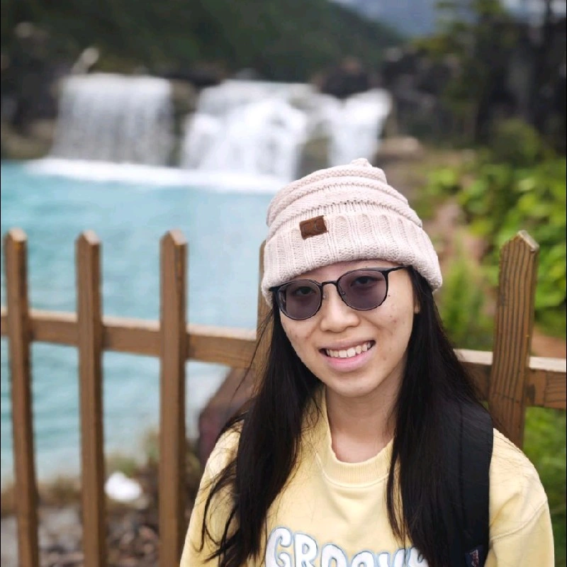
I'm someone who finds joy in figuring things out — whether it's untangling a UI that doesn't feel right or rethinking how data should flow under the hood. What started as curiosity about how apps are built has grown into a genuine interest in designing solutions that sit at the crossroads of technology, health, and everyday human experience.
I enjoy the full process — from rough sketches and prototypes to writing code and refining based on feedback. My projects reflect that range: a digital forensics case study generator, a gamified productivity app, and a gesture-triggered automated storage system built with Arduino and repurposed materials — hardware, not code, but every bit as much a design problem.
As I grow, I'm drawn toward AI, data science, software engineering, and UI/UX — areas where I can blend analytical thinking with design sensibility to build things that are both smart and intuitive. I'm still exploring where I'll specialise, but I know the work I want to do is purposeful, people-centred, and grounded in real needs.
Prior to SUTD, I completed a Diploma in Cybersecurity & Digital Forensics at Temasek Polytechnic — a foundation that sharpened my analytical thinking and gave me hands-on technical experience. That's what drives me now — and why I'm pursuing a BEng in Computer Science & Design with a minor in Healthcare Informatics, with my sights set on AI, data science, and the intersection of technology and health.
Years of Study
Modules Completed
Projects Completed
Existing productivity apps often struggle to keep users engaged — without meaningful feedback or rewards, motivation fades fast. Tasktails tackles this by tying task completion to a gamified reward system: finish your tasks, earn points, level up, and build streaks. Those rewards feed into a gacha mechanic that lets users unlock virtual pets, making the experience genuinely fun to come back to. Built with Spring Boot and PostgreSQL, the app runs on a REST API backend where reward points are triggered by task completion events. Tasktails is designed with university students in mind — people who want a more engaging way to stay on top of their responsibilities without it feeling like a chore.
A kinetic interactive display built entirely from salvaged scrapyard materials. Designed to address clutter and material waste in the school's Fab Lab, the installation uses a 4x4 grid of IR sensors and servo motors to create dynamic up-and-down motion in response to human presence — turning leftover acrylic scraps into something interactive and worth a second look.
Social isolation among the elderly is a growing concern — and most existing tools aren't built with them in mind. Buddy is a desktop application designed to bridge that gap, offering elderly users a simple, accessible interface to request help from volunteers, stay mentally active through mini-games, and connect directly with volunteers via a built-in chat. Volunteers get their own dashboard to accept or reject requests in real time, with all data synced through local JSON storage. Built with Python and Tkinter, the app was designed to feel like a phone application — fixed window size, large buttons, and minimal friction — so it works for users with little to no tech experience.
Setting up a digital forensics case study typically means manually modifying files and imaging them in a separate virtual machine — a process that's tedious and risks not being forensically sound. This web application simplifies that by giving users a controlled environment to build their own case studies from scratch. Users can apply built-in anti-forensics techniques to their evidence files and generate forensic images in a forensically sound manner, all within a single platform. Built with Python and Flask, the tool is designed for educational use — making forensics experimentation more accessible without compromising methodology.
A real-time blood donation coordination platform designed to prevent logistical crises during emergencies — inspired by the 2017 Manchester Arena bombing, where overwhelming donor turnout exposed the absence of a coordination layer. BloodLine routes the right donors to the right centres at the right time via live blood inventory synced across donation centres, a Dynamic Fast-Pass QR system with a strict 20-minute arrival window for critical blood types, and a travel deferral engine that silently removes ineligible donors using HSA-aligned rules.
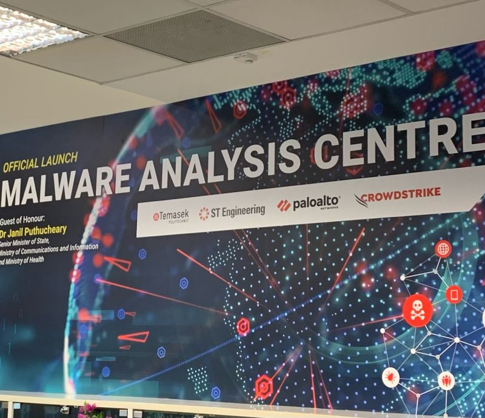
Worked in a structured SOC environment analysing and triaging malware samples using static and dynamic analysis techniques. Supported Tier 1 & 2 operations during high-alert periods, which sharpened my ability to stay focused, make quick decisions, and collaborate under pressure. Also attended industry workshops by MINDEF and GovTech, building awareness of real-world threat landscapes.
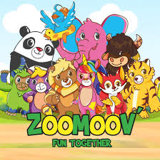
Delivered bilingual customer service, handled financial transactions, and managed customer disputes in a busy retail environment — an early lesson in communication, adaptability, and staying composed when things get hectic.
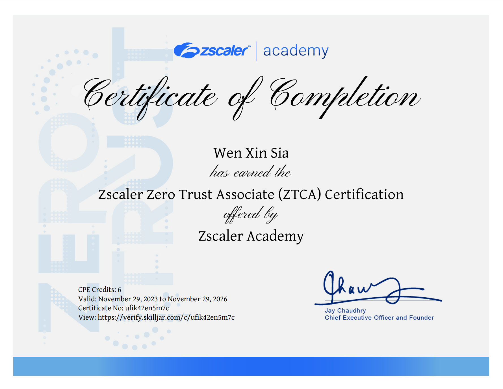
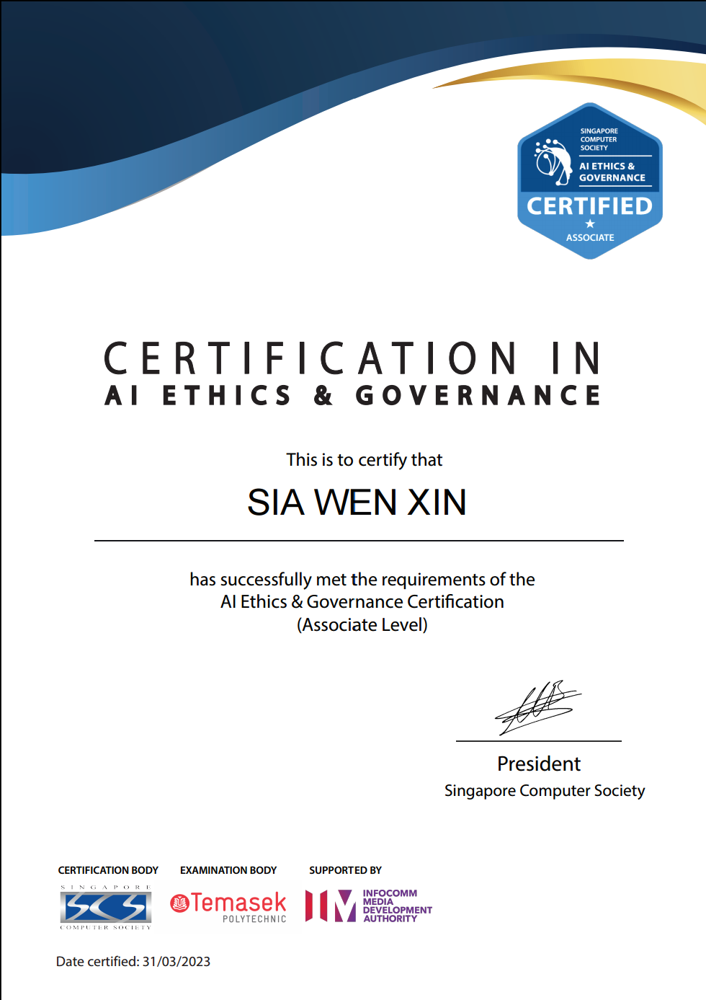
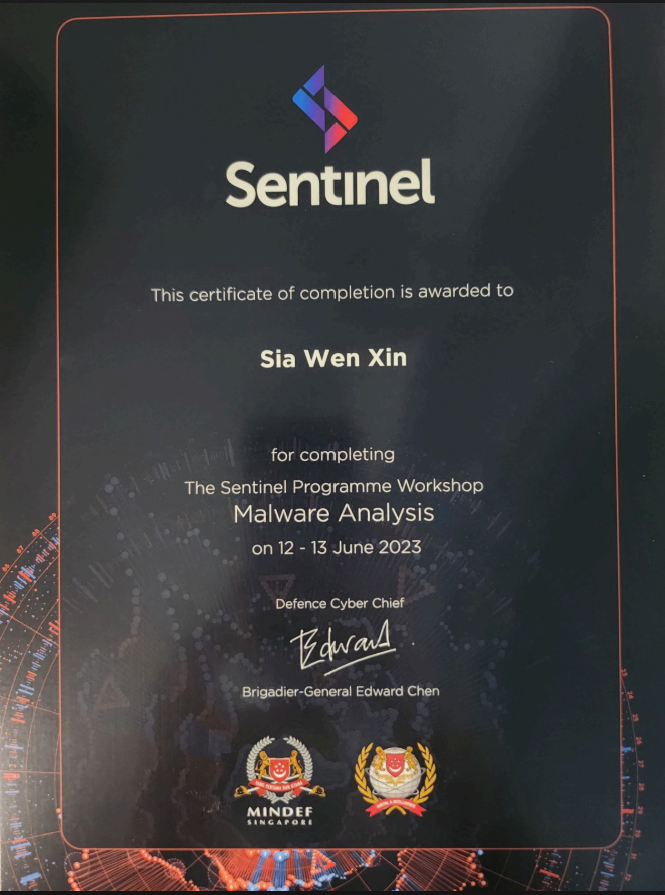
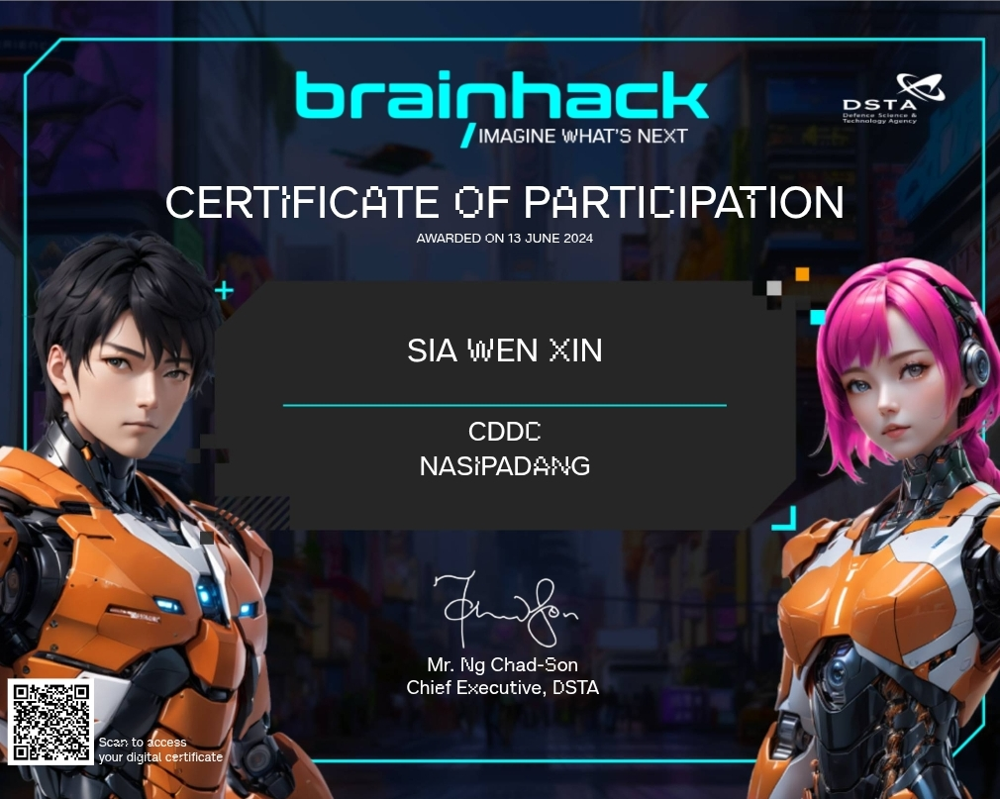
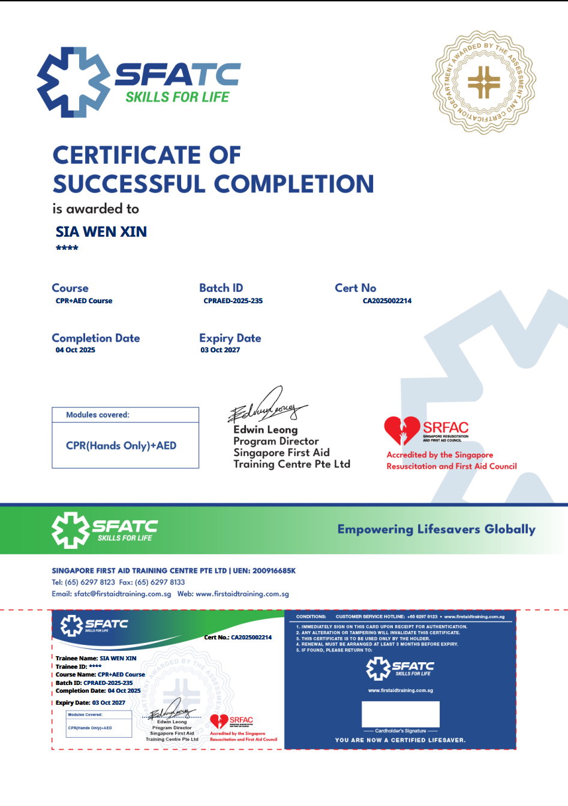
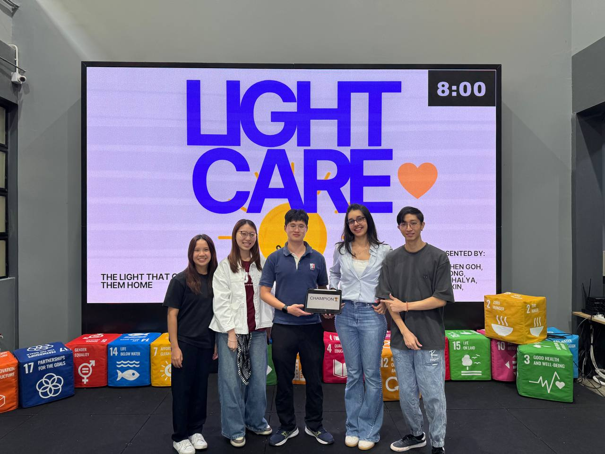
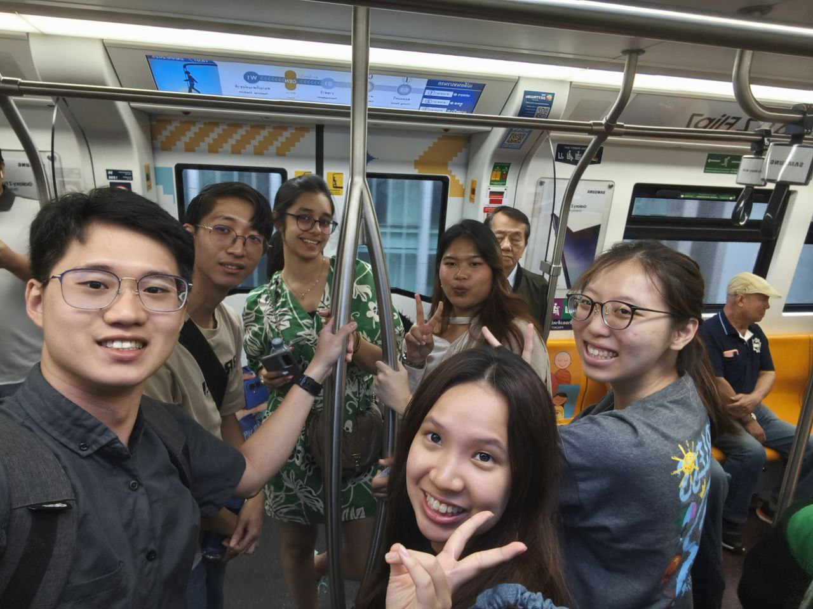
An overseas immersion programme engaging in industry visits, university exchanges, and experiential activities centred around innovation, entrepreneurship, sustainability, Design and AI.
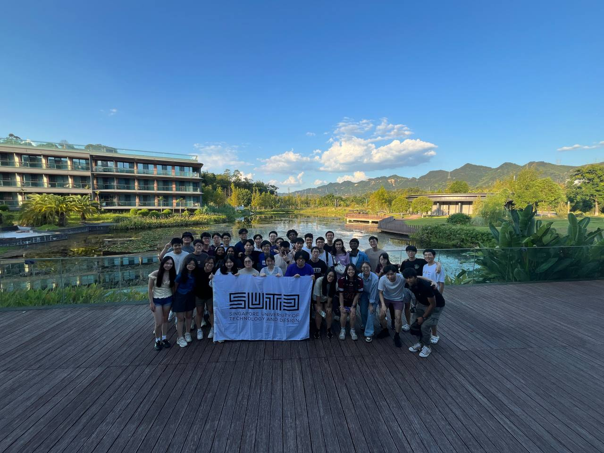
An overseas immersion programme exploring innovation and design thinking through industry and university engagements in China.
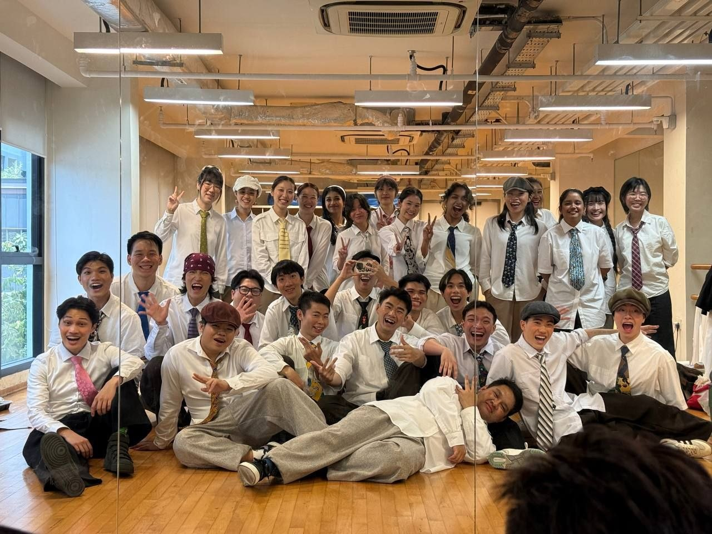
Performed and took charge of expense tracking and costume/clothing logistics — coordinating significant behind-the-scenes groundwork to ensure smooth event execution.
Coordinated expense tracking for the camp and managed payments to external coaches.
Performed at an inter-university production hosted by SMU.
Co-organised FUNKtion Club's internal dance battle, handling event logistics and coordination.
Represented the club at SUTD's annual open house as a performer.
Managed a mid-four-figure annual budget for club events, processing reimbursements and reporting to SUTD finance. Coordinated logistics for 7 events attended by 50 members.
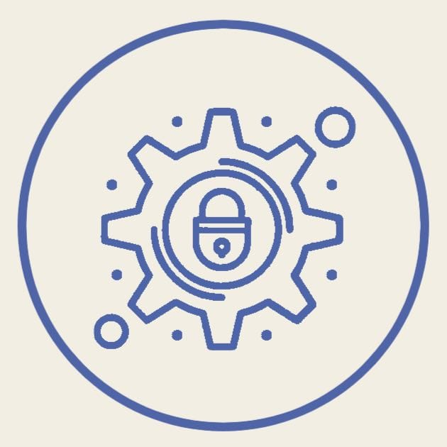
Coordinated sub-committee logistics for club bonding and open house events. Maintained administrative records and meeting minutes for a 20-member group.